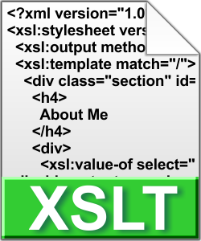
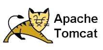
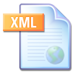
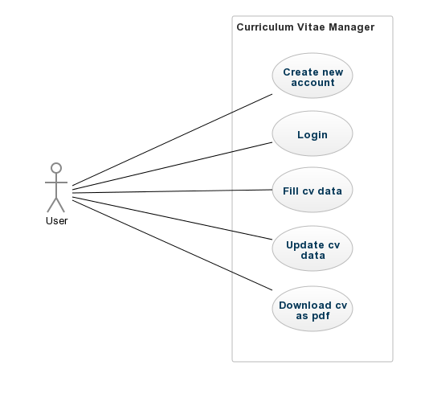

Curriculum Vitae Manager
Brief description
This web application provides users with possibility to easily create their own nice structured CV.
The application allows to create user profile, due to it the user can manage his information for the CV. He can fill, remove or change these information any time he wants.
Further it is possible to download the CV either in English or Slovak translation of static parts (headlines, subheadlines and so on) as a PDF file.
LaTex and PostgreSQL must be installed on server where this application is running.
Links to home pages of neccessary tool are provided down on this page.
Used technologies
The project is developed in JAVA. It provides users with possibility to create his profile make a CV, save it into XML which is stored in database. Further it is possible to translate parts of CV into English, transform it into LaTex and generate PDF file from it.
Used technologies
|
|
|
|
| Backend of the application is programmed using Java programming language. | Dependencies are managed using the Maven Building tool. Tomcat plugin is used for deploying. home page | Dependency Injection is managed using Spring Framework. Login services are provided by Spring Security. Controllers are implemented using Spring MVC. home page |
|
|
|
 |
| The frontend of the application is created using JSP. | Library for creating design of the frontend. | Transformations from XML to LaTeX are provided by the XSLT scripts. |
|
|
 | |
| User login data are stored in PostgreSQL. home page | Servlet container. home page | Framework for object-related mapping. home page |
|  |
|
|
| LaTex is used to transform XML stored CV into PDF document. home page | XML is used to store users' CVs. | JQuery is used for button scripting. |
Backend description
User can register to the application and their login data are save in PostgreSQL. User authentication is provided by Spring Security. After log in the application user can create his curriculum vitae by filling the create CV form. Data from the form are persisted in XML files by user's name. Afterwards the user can edit his CV anytime. XML changes are managed as DOM. The user has the possibility to download his CV as PDF document. Before download, the XML file is transformed to a LaTex document with special template and the pdf document is generated, this is done thanks to XSLT technology which also translates static phrases as headlines and so on into English or Slovak. PDF document is genarated from Tex Document by calling of external LaTex compiler and the document is then send to the user as stream of bytes.
Frontend description
Frontend is made with JSP and JSP Standard Tag Library(JSTL). I have used bootstrap framework for development of responsive and good looking web application. In addition I made some custom css styles as well as some scripts for buttons (add new group of elements). I have also used JQuery, bootstrap.js and some free-to-use fonts. Every page is made in two language variants - English and Slovak.
Use Case Diagram

Authors and Contributors
- Implement entities
- Implement Create Update Delete XML CV
- Implement Controllers
- Implement login - Spring Security
- Implement registration
-
final report
- Create XSLT script (from XML to LaTeX)
- Implement service for using the XSLT script
- Implement download as PDF
- Implement translation of static phrases in XSLT
-
***Final report***
- User Interface
- JSP and JSTL
- Translations
- JSP Update page